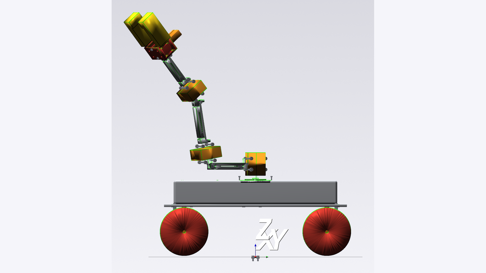
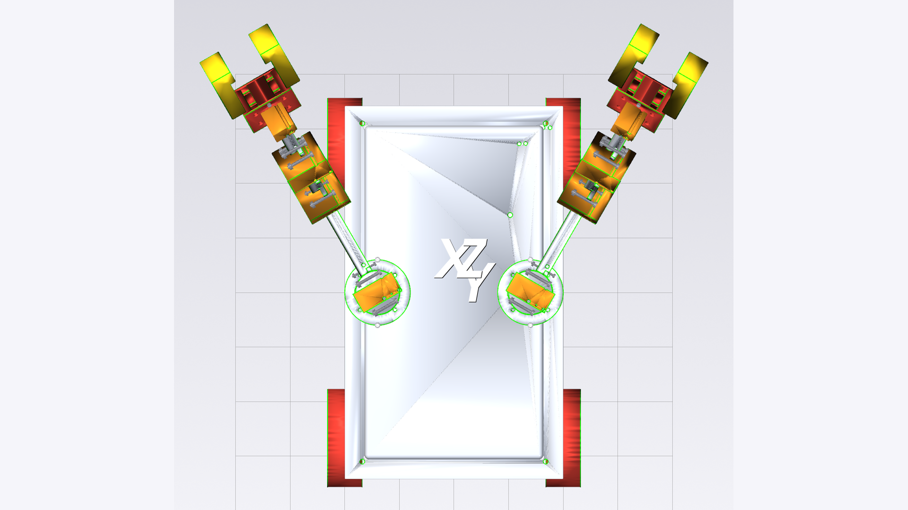

一、项目做什么
输入一句自然语言（如"设计一个4自由度机械臂，带平行爪夹持器"），系统输出一套完整工程文件：STL/STEP 几何模型、URDF 运动学、BOM 物料清单、装配指南、固件模板、ROS2 包。所有输出经过 MuJoCo 物理仿真验证——机器人在仿真里能动、能抓、物理稳定。
| 竞品 | 发表 | 能做什么 | 做不到什么 |
|---|---|---|---|
| ArtiCAD | arXiv 2026.04 | NL → CAD 代码 + URDF | 无 STL/BOM/固件，无物理仿真 |
| Text2Robot | ICRA 2025 | NL → mesh + URDF → 3D 打印 → 能走 | 只做四足，无机械臂/夹爪/BOM |
| Blox-Net | CoRL 2024 WS | NL → 积木装配 → 真机执行 | 积木不是 CAD，不设计机器人本体 |
| CADSmith | arXiv 2026.03 | 5-agent NL → CadQuery + 几何验证 | 单零件，无装配/URDF/仿真 |
| Language-3D | 本项目 | NL → 完整工程包 + MuJoCo + Gazebo 验证 | 无物理硬件验证（仅仿真） |
目前没有竞品同时覆盖 NL 输入、多零件装配、STL/STEP 几何、URDF、BOM、固件、ROS2、物理仿真这 8 个维度。项目的独特性在于工程包的完整性。
竞争风险
ArtiCAD (2026.04) 已非常接近，补上 BOM/固件/ROS2 即可持平。Embodied CAD (2026.06) 的求解器路径在原理上更严谨。"首个完整工程包"的窗口在收窄。
二、创新点
| # | 创新点 | 现状 | 审稿人可能追问 |
|---|---|---|---|
| 1 | 双通道验证 + 几何仲裁 VLM 判断结构合理性，FCL 几何引擎推翻 VLM 误判 |
已实现 有消融开关和触发率数据 | 消融实验中几何通道不改最终分数，价值在减少无效重试轮次 |
| 2 | 拓扑感知关节范围约束 根据机器人类型（人形/固定臂/轮式）用不同角度上限 + FCL 端点验证 |
已实现 但角度阈值是工程判断 | "60°/90°/120° 怎么定的？"需要补敏感性分析 |
| 3 | ROS2 + Gazebo 端到端验证 生成的 URDF 通过 check_urdf → colcon build → robot_state_publisher → Gazebo spawn |
已验证 | 目前只验证到 spawn，没有闭环关节控制 |
需要诚实说明的局限
- "多专家架构"——实际只有架构师阶段调用 LLM，其余阶段是确定性代码
- "闭环求解器"——数学实现真实但结果未回写，导出来自开链求解
- "自主避障"——目前是静态碰撞配置，非实时运动规划
- "能抓东西"——静态夹持通过，动态抬起未实现
三、实验数据
123
端到端运行次数
8
测试用例
85.1%
4 自由度臂平均分
34%
4 自由度臂关键失败率
| 用例 | 运行数 | 最佳分数 | 平均分 | 关键失败率 |
|---|---|---|---|---|
| 2dof 臂 | 2 | 95.1% | 93.6% | 0% |
| 3dof 臂 | 3 | 95.1% | 83.0% | 33% |
| 4dof 臂 | 61 | 95.1% | 85.1% | 34% |
| 4轮双臂车 | 42 | 95.3% | 93.0% | 29% |
| 5dof 臂 | 5 | 95.1% | 91.1% | 60% |
| 6dof 臂 | 2 | 92.7% | 92.4% | 50% |
| 7dof 臂 | 6 | 92.7% | 85.1% | 83% |
| 人形机器人 | 2 | 90.2% | 89.0% | 100% |
主要失败原因：运动碰撞 16 次、抓取失败 9 次、重心不稳 8 次、VLM 误判 6 次、API 超时 5 次、物理不稳定 5 次。
关于分数
论文中报告的 94.4% 是各用例最佳分数的平均值。实际跨多次运行的平均分更低（4dof 臂约 85%）。约 70% 的运行能达到最佳分数，其余因 LLM 生成几何的随机性导致碰撞或 VLM 误判。论文已标注这一分布，但摘要中的数字仍偏乐观。
四、进度与困难
已完成

4 轮双臂机器人 — STL 渲染

4 轮双臂机器人 — STL 渲染（另一视角）
| 模块 | 状态 | 说明 |
|---|---|---|
| NL → 装配流水线 | 完成 | 6 阶段，驱动 GLM-5.2 + GLM-4.6V |
| 零件库 + 连接引擎 | 完成 | 94 模板，56 个真实商用件，8 种连接方式 |
| FreeCAD 几何生成 | 完成 | 子进程桥，真实 STL/STEP 输出 |
| 双通道验证 | 完成 | VLM 视觉 + FCL 几何仲裁 |
| MuJoCo 物理仿真 | 完成 | 物理稳定、关节驱动、地面行驶 |
| 抓取验证 | 部分 | 静态抓取通过，动态抬升失败 |
| URDF + ROS2 导出 | 完成 | Gazebo 加载验证通过 |
| Web 可视化 | 完成 | FastAPI + Three.js 实时动画 |
| 论文 | 初稿 | 7 页编译通过，无外部 benchmark 对比 |
| 开源 | 完成 | GitHub 公开，CI 通过 |
当前困难
| 困难 | 影响 | 原因 |
|---|---|---|
| LLM 生成不稳定 | 约三分之一运行有关键失败 | GLM-5.2 每次生成不同几何，部分有碰撞 |
| 动态抓取抬升失败 | "能抓"只能到静态夹持 | 纯扭矩控制不够，需轨迹规划 |
| 无外部 benchmark | 无法与竞品直接对比 | MUSE 评估的是 CadQuery→STEP，任务格式不同 |
| 无硬件验证 | 仅仿真，审稿人可能要求 | Text2Robot 和 Blox-Net 有真机实验 |
| 消融样本不足 | 统计意义不够 | no_geo 消融只跑了 1 次有效数据 |
| 时间紧迫 | 竞争者在逼近 | ArtiCAD 2026.04 发表，差距在缩小 |
五、发文计划
| 方案 | 周期 | 好处 | 代价 |
|---|---|---|---|
| A. 发 arXiv 预印本 | 本周 | 立刻确立时间戳 | 实验不够充分，可能被后续工作超越 |
| B. 投 CoRL 2026 Workshop | 4-6 页 | 快投快审 | 影响力有限 |
| C. 投 ICRA 2027 | 8 页 | 影响力最大 | 需要补实验和样本量 |
建议 A + B 并行：本周发预印本抢时间戳，同时投 Workshop。完整论文留 ICRA 2027，期间补充消融实验、尝试 3D 打印做物理验证。
六、需要和老师确认的问题
| # | 问题 |
|---|---|
| 1 | 作者署名方式？老师的贡献定位？ |
| 2 | 目标会议选哪个？CoRL Workshop、ICRA 2027、还是其他？ |
| 3 | 是否需要补硬件实验（3D 打印 + 装配验证）？ |
| 4 | 是否接入其他 LLM（GPT-4o / Claude）做对比实验？ |
| 5 | 论文分数报最佳值还是均值？ |
| 6 | 动态抓取：补轨迹规划，还是定位为"静态抓取验证"？ |
七、总结
7/12
期望达成
4/12
部分达成
1/12
未达成（避障）
核心交付链——从自然语言到零件、装配、求解、CAD 生成、验证、URDF 导出、仿真、网页可视化——是真实工程实现，不是 demo。零件库的 56 个商用件规格与厂家手册逐项吻合，论文 15 条引用全部经过独立验证，无幻觉。开源代码 120 个源文件、7.4 万行、4200 个测试，CI 通过。
主要差距在三方面：多臂运动中实时避障未实现（当前只有静态碰撞配置）；抓取只能静态夹住无法抬起；LLM 生成的不确定性导致约三分之一运行有关键失败。这些局限已在论文和文档中诚实标注。
距离完全满足原始项目期望，还需要：实时运动规划、抓取抬升、架构收敛。这三项都需要较大工程投入。